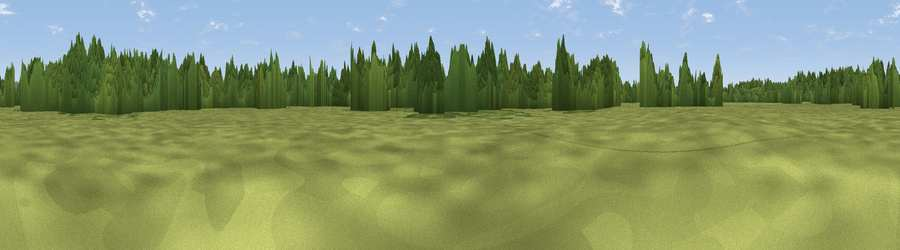

Viewpoint near Ripley
#45947 in England · top 90% of its area beats it · near RipleyWhere it is
The exact computed spot (TQ 04170 57706). Click the marker for map links.
The view, rendered

A 360° render of this exact spot computed from the terrain model, tree cover and land cover — summer colours, afternoon light, calibrated against photographs of famous viewpoints. Real trees, hedges and buildings will differ in detail.
The panorama
Grey silhouette: terrain skyline in each direction (720 bearings, Earth curvature and refraction included). Dashed green: skyline with trees (+15 m) and buildings (+8 m) as obstacles. Blue strip: how far the ground is visible on each bearing.
Where the view opens
Wedge length = distance to the farthest visible ground on that bearing (vegetation-aware). Rings at 10, 25 and 50 km.
What fills the view
54% grassland · 42% woodland · 2% cropland · 2% built-up
Angular shares of the visible panorama (visual magnitude), not map area. Landscape diversity 0.38 (0–1 Shannon).
Key numbers
More beautiful places nearby
The staircase of upgrades: each row has a higher view potential than everything closer. Driving times are estimates from straight-line distance, calibrated against real road routing — check an actual route before setting out.
| Place | Direction | Drive | Score |
|---|---|---|---|
| Fox Hill | NW · 1 km | ~4 min | 32.0 |
| Viewpoint near Hatchford | ENE · 5 km | ~11 min | 38.7 |
| Viewpoint near Whiteley Village | NE · 6 km | ~12 min | 43.7 |
| Viewpoint near Whiteley Village | NE · 6 km | ~13 min | 43.9 |
| Viewpoint near Shere | SSE · 8 km | ~16 min | 52.9 |
| Viewpoint near Chilworth | S · 9 km | ~17 min | 57.5 |
| St Martha's Hill | S · 10 km | ~19 min | 59.5 |
| Viewpoint near Guildford | SW · 11 km | ~21 min | 65.4 |
51.30895, -0.50691 · source: osm viewpoint · position refined by local search. Computed location — check access rights before visiting.